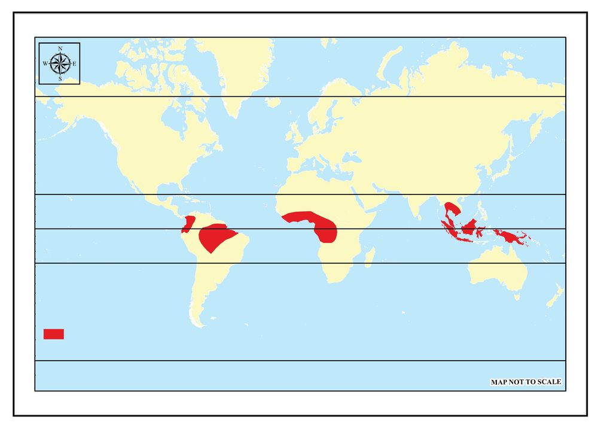
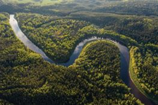
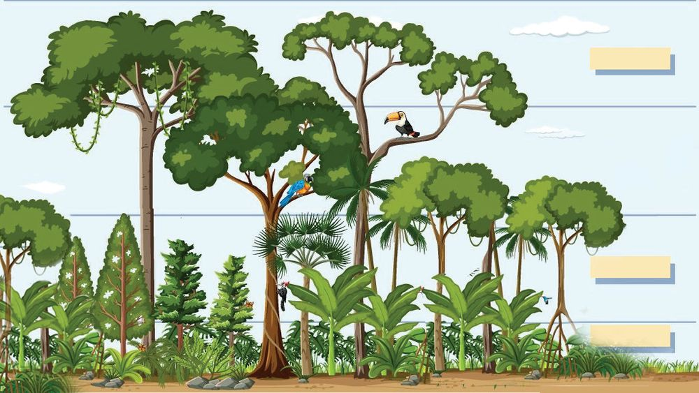
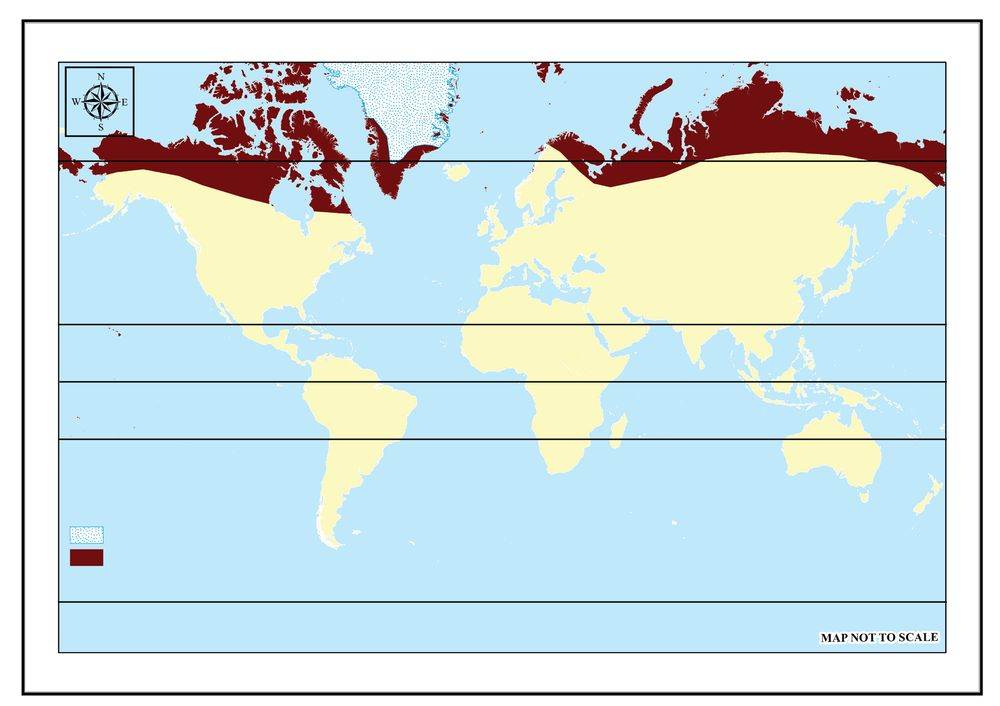
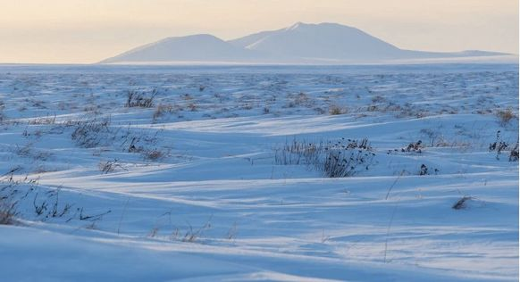
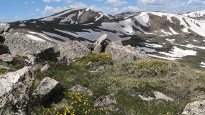

ഇന്നലെയാണ് സെന്റ് പീറ്റേഴ്സ് ബർഗിൽ നിന്നും നര്യയൻമാറിൽ ഞാൻ എത്തിച്ചേർന്നത്.
പെച്ചോോരാനദിയുടെ തീരത്തുള്ള ഈ പട്ടണത്തിൽ എന്നെപ്പോോലുള്ള ധാരാളം സഞ്ചാരികൾ
എത്തിച്ചേരാറുണ്ട്. ഇവിടെ നിന്നും സൈബീരിയൻ ടൺഡ്രാപ്രദേശങ്ങളിലേക്ക് കാൽനട
യായി സഞ്ചരിച്ച് അവിടത്തെ സവിശേഷതകൾ മനസ്സിലാക്കുക എന്നുള്ളതാണ് ഞാൻ
ഉൾപ്പെടുന്ന പര്യയവേഷണസംഘത്തിന്റെ ലക്ഷ്യം. വർഷം മുഴുവൻ അതിശൈത്യം
അനുഭവപ്പെടുന്നതും മഞ്ഞുമൂടികിടക്കുന്നതുമായ ഈ പ്രദേശം കോംംഗോോയിലെ കസായി
പ്രവിശ്യയയിൽ നിന്നുള്ള എനിക്ക് അദ്ഭുതങ്ങളുടെ ലോോകമാണ് തുറന്നുവച്ചത്. താരത
മ്യേേന ഏറ്റവുമധികം സൗൗരോോർജം ലഭിക്കുന്ന ഭൂമധ്യയരേഖാപ്രദേശത്ത് ജീവിക്കുന്ന
എന്നെപ്പോോലുള്ള ഒരാൾക്ക് ധ്രുവപ്രദേശത്തോോടടുത്തുള്ള ഒരു പ്രദേശത്ത് എത്തിച്ചേരു
മ്പോോഴുംം അവിടെയുള്ള കാഴ്ചകൾ കാണുമ്പോോഴുമുള്ള അതിശയം എത്രയാണെന്ന്
പറഞ്ഞറിയിക്കുന്നതിനും അപ്പുറമാണ്. ഇരുപ്രദേശങ്ങളുംം തമ്മിലുള്ള സസ്യയജന്തുജാലങ്ങ
ളിലെ വൈവിധ്യം ജീവിതരീതികളിലെ വ്യയത്യാസം എന്നിവ കണ്ടറിയേണ്ട ഒന്നുതന്നെ.
ടൺഡ്രാപ്രദേശങ്ങളിൽ താരതമ്യേേന ഉയർന്ന താപനില അനുഭവപ്പെടുന്ന ജൂലൈ
മാസത്തിൽപോോലും ശരാശരി താപനില 100 C നും താഴെയാണ്. ശൈത്യയകാല താപനില
-50 ഡിഗ്രി വരെ താഴാറുണ്ട്. വർഷം മുഴുവൻ ഉയർന്ന താപനില അനുഭവപ്പെടുന്ന എന്റെ
നാടിനെക്കുറിച്ച് ഞാൻ അപ്പോോൾ ഓർത്തുപോോയി. കട്ടിയുള്ള രോോമക്കുപ്പായങ്ങളുംം
രോോമത്തൊൊപ്പിയും ധരിച്ച് ഞങ്ങൾ ടൺഡ്രാപര്യയവേഷണത്തിന്
തയ്യാറായി. മത്സ്യം
ഉപയോോഗിച്ച് തയ്യാറാക്കുന്ന പെൽമെനി എന്ന തനത് വിഭവമായിരുന്നു പ്രാതലിനോോടൊൊപ്പം
ഞങ്ങൾക്ക് ലഭിച്ചത്. കോംംഗോോയിലെ മിക്കവാറുംം എല്ലാ വിഭവങ്ങൾക്കൊൊപ്പവും മരച്ചീനി
ഉണ്ടാകും. വാഴയിലയിൽ വിളമ്പുന്ന വേവിച്ച മരച്ചീനിയായ ക്വാംംഗ, മരച്ചീനിമാവുകൊൊണ്ടു
ണ്ടാക്കുന്ന ഫുഫു, മരച്ചീനി ഇല വേവിച്ച് ഉണ്ടാക്കുന്ന വിഭവമായ സോോമ്പെ എന്നിവയാണ്
പ്രധാന മരച്ചീനി വിഭവങ്ങൾ. എന്റെ നാട്ടിലെ ഭക്ഷണരീതിയുമായി ഇവിടത്തെ ഭക്ഷണ
രീതിയെ താരതമ്യംം ചെയ്തപ്പോോൾ അവയിലെ വൈവിധ്യം എന്നിൽ ഏറെ കൗൗതുകമുണർത്തി.
ഭൂമധ്യയരേഖാപ്രദേശത്തുള്ള റിപ്പബ്ലിക് ഓഫ് കോംംഗോോ എന്ന
രാജ്യയത്തിലെ കസായി പ്രവിശ്യയയിൽ നിന്നുള്ള ഒരു
സഞ്ചാരി തന്റെ ടൺഡ്രാപര്യയവേഷണത്തെക്കുറിച്ച് തയ്യാറാ
ക്കിയ വിവരണത്തിന്റെ ഭാഗമാണ് നിങ്ങൾ വായിച്ചത്.
ഭൂമിയിലെ വ്യയത്യയസ്ത കാലാവസ്ഥാമേഖലകളെക്കുറിച്ച്
നിങ്ങൾ മുൻ അധ്യാായത്തിൽ നിന്നും മനസ്സിലാക്കിയല്ലോോ.
ഭൂമധ്യയരേഖാകാലാവസ്ഥാ മേഖലയിൽ ഉൾപ്പെട്ട ഒരു പ്രദേ
ശത്ത് ജീവിക്കുന്ന ഒരാൾ മറ്റൊൊരു കാലാവസ്ഥാമേഖല
യായ ടൺഡ്രയിൽ എത്തിച്ചേർന്നപ്പോോൾ തന്റെ ചുറ്റു
പാടിൽ നിന്നും തികച്ചും
വ്യയത്യയസ്തമായ സാഹചര്യയ
ങ്ങൾ നിലനിൽക്കുന്നതായി അനുഭവക്കുറിപ്പിൽ രേഖ
പ്പെടുത്തിയത് കണ്ടില്ലേ?
ഈ രണ്ട് മേഖലകളുടെയും കൂടുതൽ സവിശേഷത
കളിലേക്ക് നമുക്ക് കടന്നു ചെല്ലാം.
ഒരു അറ്റ്ലസിന്റെ സഹായത്തോോടെ കോംംഗോോ എന്ന പ്രദേശ
ത്തിന്റെ സ്ഥാനവും നര്യയൻമാർ എന്ന പട്ടണത്തിന്റെ
സ്ഥാനവും കണ്ടെത്തി അവ ഏതേത് കാലാവസ്ഥാമേഖല
കളിൽ ഉൾപ്പെടുന്നുവെന്ന് തിരിച്ചറിയൂ.
ഭൂമധ്യയരേഖാ കാലാവസ്ഥാമേഖലയിൽ ഉൾപ്പെട്ട ഒരു
പ്രദേശമാണ് കോംംഗോോ എന്ന് നിരീക്ഷിച്ചറിഞ്ഞില്ലേ?
ഭൂമധ്യയരേഖാകാലാവസ്ഥാമേഖലയുടെ സവിശേഷതകളെ
പ്പറ്റി നമുക്ക് ഇനി ചർച്ച ചെയ്യാം.
ഭൂമധ്യയരേഖാമഴക്കാടുകളിൽ
നിന്നുള്ള ദൃശ്യയങ്ങൾ
ചിത്രം 3.2
58
ഭൂമധ്യയരേഖാകാലാവസ്ഥാമേഖലകൾ
ചിത്രീകരിച്ചിട്ടുള്ള
ഭൂപടമാണ് ചുവടെ നൽകിയിട്ടുള്ളത്. ഭൂപടം (ചിത്രം 3.3)
അടിസ്ഥാനമാക്കി ഒരു അറ്റ്ലസിന്റെ സഹായത്തോോടു
കൂടി നൽകിയിട്ടുള്ള ചോോദ്യയങ്ങൾക്ക് ഉത്തരം കണ്ടെത്തൂ.
ഭാഗം 1
Page 59

Figure fig_ch03_p059_01 (Page 59)
മഴക്കാടുകളിൽ നിന്നും മഞ്ഞുരുകാത്ത നാട്ടിലേക്ക്
ഭൂമധ്യയരേഖാകാലാവസ്ഥാമേഖല
66½°വടക്ക്
വടക്കേ
അമേരിക്ക
ഏഷ്യയ
യൂറോോപ്പ്
23½° വടക്ക്
ആഫ്രിക്ക
ആമസോോൺ
തടം
സൂചിക
ഭൂമധ്യയരേഖാകാലാവസ്ഥാമേഖല
മധ്യയആഫ്രിക്ക
0°
തെക്കുകിഴക്കൻ
ഏഷ്യയ
തെക്കേ
അമേരിക്ക
23½° തെക്ക്
ആസ്ട്രേലിയ
66½° തെക്ക്
ചിത്രം 3.3
ഈ മേഖല സ്ഥിതി ചെയ്യുന്നത് ഏതൊൊക്കെ വൻകരകളിലാണ്?
ഈ മേഖലയിൽ ഉൾപ്പെടുന്ന പ്രദേശങ്ങൾ ഏതെല്ലാം?
ഏത് താപീയമേഖലയിലാണ് ഈ കാലാവസ്ഥാമേഖല സ്ഥിതി
ചെയ്യുന്നത്?
ഏഷ്യയ, ആഫ്രിക്ക, തെക്കേ അമേരിക്ക തുടങ്ങിയ വൻകരകളിലെ
ഭൂമധ്യയരേഖാകാലവസ്ഥാമേഖലയിൽ ഉൾപ്പെടുന്ന രാജ്യയങ്ങൾ ഏതൊൊ
ക്കെയെന്ന് ഒരു അറ്റ്ലസിന്റെ സഹായത്തോോടെ കണ്ടെത്തി പട്ടിക
പൂർത്തിയാക്കൂ.
ഭൂമധ്യയരേഖാകാലാവസ്ഥമേഖലയിൽ ഉൾപ്പെടുന്ന പ്രദേശങ്ങളെ
ലോോകഭൂപടരൂപരേഖയിൽ അടയാളപ്പെടുത്തി എന്റെ ഭൂപടശേഖരത്തിൽ
ഉൾപ്പെടുത്തൂ.
എന്തുകൊൊണ്ടാണ് ഈ കാലാവസ്ഥാമേഖല ഭൂമധ്യയരേഖാകാലാവസ്ഥാമേഖല
എന്നറിയപ്പെടുന്നത്?
ഭൂമധ്യയരേഖാകാലാവസ്ഥാമേഖലയിൽ
ഉൾപ്പെടുന്ന
പ്രദേശങ്ങളെ
സംബന്ധിച്ച് നിങ്ങൾ സാമാന്യയധാരണ നേടിയല്ലോോ. ഇനി നമുക്ക്
ഇവിടെ അനുഭവപ്പെടുന്ന കാലാവസ്ഥയുടെ പ്രത്യേേകതകൾ എന്തെല്ലാ
മെന്ന് പരിശോോധിക്കാം. വർഷം മുഴുവൻ താപനില ഏറെക്കുറെ
ഒരേപോോലെയാണ് എന്നതാണ് ഭൂമധ്യയരേഖാകാലാവസ്ഥയുടെ ഏറ്റവും
ശ്രദ്ധേയമായ സവിശേഷത. ഭൂമധ്യയരേഖാപ്രദേശത്ത് കാലികമായും ദൈനി
കമായും താപനിലയിൽ കാര്യയമായ വ്യയതിയാനം ഉണ്ടാകാറില്ല. മാസിക
ശരാശരി താപനിലയും വാർഷിക ശരാശരി താപനിലയും ഏതാണ്ട് 27
ഡിഗ്രി സെൽഷ്യയസാണ്.
ഭൂമധ്യയരേഖാപ്രദേശത്ത് ശൈത്യയകാലം അനുഭവപ്പെടാറില്ല. എന്തുകൊൊ
ണ്ടാണ് ഇത്തരത്തിലൊൊരു സവിശേഷമായ കാലാവസ്ഥ ഇവിടെ അനുഭവ
പ്പെടുന്നതെന്നറിയാമോോ. ഭൂമധ്യയരേഖാപ്രദേശത്ത് വർഷം മുഴുവൻ
സൂര്യയരശ്മികൾ ലംബമായാണ് പതിയ്ക്കുന്നതെന്ന് നിങ്ങൾ മനസ്സിലാക്കി
യിട്ടുണ്ടല്ലോോ.
60
ഉയർന്ന അളവിൽ ഇവിടെ ലഭിക്കുന്ന സൂര്യയപ്രകാശം വർഷം മുഴുവൻ
ഉയർന്ന താപനിലയ്ക്ക് കാരണമാകുന്നു. തന്മൂലം ഈ പ്രദേശത്ത് ശൈത്യം
പൊൊതുവെ അനുഭവപ്പെടാറില്ല.
പ്രഭാതത്തിൽ മിതമായ താപനിലയാണ് അനുഭവപ്പെടുന്നതെങ്കിലും
ക്രമേണ താപനില വൻതോോതിൽ ഉയരുന്നു. ഇത് ഉയർന്ന തോോതിലുള്ള
ബാഷ്പീകരണത്തിനും ഉച്ചകഴിഞ്ഞുള്ള കനത്ത സംവഹന മഴയ്ക്കും കാരണ
മാകുന്നു.
സംവഹനമഴയെക്കുറിച്ച് നിങ്ങൾ മുൻ അധ്യാായത്തിൽ നിന്നും മനസ്സി
ലാക്കിയിട്ടുണ്ടല്ലോോ.
സംവഹനമഴ ഉണ്ടാകുന്നതെങ്ങനെയെന്നും അവയുടെ സവിശേഷതകളെ
ന്തെല്ലാമെന്നും ക്ലാസിൽ ചർച്ച ചെയ്ത് കുറിപ്പ് തയ്യാറാക്കൂ.
കേരളത്തിൽ സംവഹനമഴ അനുഭവപ്പെടാറുണ്ടോോ? ഏതൊൊക്കെ മാസങ്ങളിലാണ് ഈ
മഴ അനുഭവപ്പെടുന്നത്?
വർഷം മുഴുവൻ കനത്ത മഴ ലഭിക്കുന്ന പ്രദേശമാണ് ഭൂമധ്യയരേഖാകാലാ
വസ്ഥാമേഖല. ഏകദേശം 175 സെന്റിമീറ്റർ മുതൽ 250 സെന്റിമീറ്റർ വരെ
യാണ് ഇവിടത്തെ വാർഷികമഴ. ഉയർന്ന താപനില, ഉയർന്ന ബാഷ്പീ
കരണ തോോത് എന്നിവയാണ് ഭൂമധ്യയരേഖാപ്രദേശങ്ങളിലെ കനത്ത മഴയ്ക്ക്
കാരണം. സംവഹനവൃഷ്ടി കൂടാതെ ചിലയിടങ്ങളിൽ ശൈലവൃഷ്ടിയും
ലഭിക്കാറുണ്ട്. ഇന്തോോനേഷ്യയയിലെയും ആഫ്രിക്കയിലെയും പർവത
പ്രദേശങ്ങളിലാണ് ശൈലവൃഷ്ടി ലഭിക്കുന്നത്.
നിർവാതമേഖലയിലെ വായു പ്രവാഹങ്ങളുടെ സംയോോജനം മൂലമു
ണ്ടാകുന്ന അന്തരീക്ഷ അസ്വവസ്ഥതകൾ ഇടവിട്ടുള്ള നേരിയ ചക്രവാത
വൃഷ്ടിക്കും ചിലപ്പോോൾ കാരണമാകാറുണ്ട്.
എല്ലാ മാസവും മഴ ലഭിക്കുന്ന ഇവിടെ മൺസൂൺ കാലാവസ്ഥയിലേതു
പോോലെയോോ സാവന്ന പ്രദേശങ്ങളിലുള്ളതുപോോലെയോോ ഒരു പ്രത്യേേക
വരണ്ടകാലം അനുഭവപ്പെടാറില്ല.
നിർവാതമേഖല (Doldrum)
വർഷം മുഴുവൻ ഉയർന്ന അളവിൽ സൗൗരോോർജം ലഭിക്കുന്നതുമൂലം ഭൂമധ്യയരേഖയ്ക്ക് ഉടനീളം താപജന്യയ
മായ ഒരു ന്യൂനമർദമേഖല രൂപപ്പെടുന്നു. ഇവിടെ വായുവിന്റെ തിരശ്ചീന സഞ്ചാരം സാധ്യയമാകുന്നില്ല.
നിർവാതമേഖല എന്നാണ് ഈ മേഖല അറിയപ്പെടുന്നത്. ഇരു അർധഗോോളങ്ങളിലിന്നും ഭൂമധ്യയരേഖാ
പ്രദേശത്തേക്ക് വീശുന്ന വാണിജ്യയവാതങ്ങളുടെ സംയോോജന മേഖലകൂടിയാണിത്.
സ്റ്റാൻഡേർഡ് X
61
Page 62
Figure fig_ch03_p062_01 (Page 62)
സാമൂഹ്യയശാസ്ത്രം II
ഭൂമധ്യയരേഖാകാലാവസ്ഥാമേഖലയിലെ രണ്ട് വ്യയത്യയസ്ത സ്ഥലങ്ങളിൽ രേഖ
പ്പെടുത്തിയ വാർഷിക മഴയുടെയും താപനിലയുടെയും വിതരണ ക്രമ
മാണ് ചുവടെ നൽകിയിട്ടുള്ള ചിത്രങ്ങൾ സൂചിപ്പിക്കുന്നത്. ചിത്രങ്ങൾ
വിശകലനം ചെയ്ത് ചുവടെ നൽകിയിട്ടുള്ള ചോോദ്യയങ്ങൾക്ക് ഉത്തരം
കണ്ടെത്തൂ.
മാസം
വർഷണം
ശരാശരി
(മി.മീ) താപനില (°C)
Chart Title
മി.മീ
മി.മീ
°C
25.1
400
35
174
25.7
350
30
268
26
300
ഏപ്രിൽ
300
26.1
250
മെയ്
246
26.3
200
174
26.2
183
26.1
219
26
243
25.8
50
305
25.7
0
373
284
25.2
25.1
ജനുവരി
209
ഫെബ്രുവരി
മാർച്ച്
ജൂൺ
ജൂലായ്
ആഗസ്റ്റ്
സെപ്റ്റംബർ
ഒക്ടോോബർ
നവംബർ
ഡിസംബർ
25
20
15
150
10
100
5
Jan
Feb
Mar
Apr
വർഷണം
ശരാശരി
(മി.മീ) താപനില (°C)
ഫെബ്രുവരി
101
12.9
മാർച്ച്
141
13
ഏപ്രിൽ
152
12.9
100
മെയ്
103
12.9
80
54
12.8
48
12.8
31
13.2
40
സെപ്റ്റംബർ
ഒക്ടോോബർ
നവംബർ
ഡിസംബർ
Sep
Oct
Nov
0
Dec
Avg.
Temp താപനില
ശരാശരി
°C
160
12.7
ആഗസ്റ്റ്
Aug
Chart Title
മി.മീ
81
ജൂലായ്
Jul
ക്വാലാലമ്പൂർ
ചിത്രം 3.4
ജനുവരി
ജൂൺ
Jun
Precipitation
വർഷണം
ഉറവിടം: സർട്ടിഫിക്കറ്റ് ഫിസിക്കൽ ആന്റ് ഹ്യൂമൻ
ജ്യോോഗ്രഫി - ഗോോ ചെങ് ലിയോോങ്
മാസം
May
20
140
120
15
10
60
41
13.3
20
110
12.7
133
96
12.5
12.6
0
5
Jan
Feb
ഉറവിടം: സർട്ടിഫിക്കറ്റ് ഫിസിക്കൽ ആന്റ് ഹ്യൂമൻ
ജ്യോോഗ്രഫി - ഗോോ ചെങ് ലിയോോങ്
Mar
Apr
May
Jun
വർഷണം
Precipitation
Jul
Aug
Sep
Oct
Nov
Dec
0
ശരാശരി
Avg.
Temp താപനില
ബൊൊഗോോട്ട
ചിത്രം 3.5
രണ്ട് സ്ഥലങ്ങളിലെയും ഏറ്റവും ഉയർന്നതും ഏറ്റവും താഴ്ന്നതുമായ മാസിക
ശരാശരി താപനില എത്ര?
ഓരോോ സ്ഥലത്തെയും വാർഷിക താപാന്തരം എത്ര?
മഴ ലഭിക്കാത്ത മാസങ്ങൾ ഉണ്ടോോ?
ഉയർന്ന താപനിലയും നേരിയ താപാന്തരവും വർഷം മുഴുവൻ മഴയും
ലഭിക്കുന്ന പ്രദേശമാണ് ഭൂമധ്യയരേഖാകാലാവസ്ഥാമേഖല എന്ന് ബോോധ്യയ
മായില്ലേ.
62
ആഫ്രിക്കയിലെ ഏറ്റവും ഉയരം കൂടിയ പർവതശിഖര
മായ കിളിമഞ്ചാരോോ ഭൂമധ്യയരേഖാകാലാവസ്ഥാമേഖല
യിലാണ് സ്ഥിതി ചെയ്യുന്നതെങ്കിലും വർഷം മുഴുവൻ
മഞ്ഞ് മൂടികിടക്കുന്ന കൊൊടുമുടിയാണിത്.
എന്തുകൊൊണ്ടാണ് കിളിമഞ്ചാരോോ കൊൊടുമുടി
വർഷം മുഴുവൻ മഞ്ഞുമൂടപ്പെട്ടിരിക്കുന്നത്?
ഉയർന്ന ആർദ്രത, തീവ്രമായ സൂര്യയപ്രകാശം, അത്യുഷ്ണം
എന്നിവ കാരണം പകൽ സമയത്ത് ഭൂമധ്യയരേഖാകാലാ
വസ്ഥാമേഖലയിൽ അസഹനീയമായ അന്തരീക്ഷ
സ്ഥിതിയാണുള്ളത്. എന്നാൽ തീരപ്രദേശങ്ങളിൽ
കടൽകാറ്റുകളുടെ സ്വാധീനം അത്യുഷ്ണത്തിന് ആശ്വാസ
മേകുന്നു. ഇത് തീരപ്രദേശങ്ങളിൽ കൂടുതൽ ജനവാസം
സൃഷ്ടിക്കുന്നതിന് കാരണമാകുന്നു.
കിളിമഞ്ചാരോോ
ചിത്രം 3.6
നിങ്ങൾക്കറിയാമോോ?
ഗിനിയയുടെ തീരങ്ങളിൽ
രാത്രികാലങ്ങളിൽ വീശുന്ന
ഹർമാറ്റൻ എന്ന പ്രാദേശിക
വാതം അവിടത്തെ താപനില
കുറയ്ക്കുന്നു.
ഭൂമധ്യയരേഖാകാലാവസ്ഥാമേഖലയിൽ അനുഭവപ്പെടുന്ന
കാലാവസ്ഥയും കേരളത്തിൽ അനുഭവപ്പെടുന്ന കാലാ
വസ്ഥയും തമ്മിൽ താരതമ്യംം ചെയ്യുന്നതിനായി ക്ലാസിൽ
ഒരു ചർച്ച സംഘടിപ്പിക്കൂ. ഭൂമധ്യയരേഖാകാലാവസ്ഥാ
മേഖലയിൽ അനുഭവപ്പെടുന്ന കാലാവസ്ഥ കേരള
ത്തിന്റെ കാലാവസ്ഥയിൽ നിന്നും എത്രത്തോോളം വ്യയത്യാസപ്പെട്ടിരിക്കുന്നു
വെന്ന് കണ്ടില്ലേ. വർഷം മുഴുവൻ ലഭിക്കുന്ന ശക്തമായ മഴയും ഉയർന്ന
താപനിലയുമാണ് ഭൂമധ്യയരേഖാകാലാവസ്ഥാമേഖലയിലെ കാലാവസ്ഥ
യുടെ പ്രധാന സവിശേഷത.
ഈ പ്രദേശത്തെ ഉയർന്ന താപനിലയും ശക്തമായ മഴയും സസ്യയജാല
ങ്ങളുടെ സമൃദ്ധമായ വളർച്ചയ്ക്ക് വഴിയൊൊരുക്കുന്നു. ആഗോോളപാരിസ്ഥിതിക
സന്തുലനം നിലനിർത്തുന്നതിൽ നിർണ്ണായക പ്രാധാന്യയമുള്ള ഭൂമധ്യയരേഖാ
കാലാവസ്ഥാമേഖലയിലെ നൈസർഗിക സസ്യയജാലങ്ങളുടെ വൈവിധ്യയങ്ങ
ളിലേക്ക് നമുക്ക് കടന്നുചെല്ലാം.
നൈസർഗിക സസ്യയജാലങ്ങൾ
ഉഷ്ണമേഖലാമഴക്കാടുകൾ എന്നറിയപ്പെടുന്ന നിബിഡവനങ്ങളാണ് ഈ
കാലാവസ്ഥാമേഖലയുടെ പ്രത്യേേകത. തെക്കേ അമേരിക്കയിലെ ആമ
സോോൺ തടം, മധ്യയപശ്ചിമആഫ്രിക്ക, ഇന്തോോനേഷ്യയ, മലായ് ഉപദ്വീപ്,
ന്യൂ ഗിനിയ എന്നിവിടങ്ങളിലായി ഈ മഴക്കാടുകൾ വ്യാപിച്ച് കിടക്കുന്നു.
സ്റ്റാൻഡേർഡ് X
63
Page 64
Figure fig_ch03_p064_01 (Page 64)

Figure fig_ch03_p064_02 (Page 64)
സാമൂഹ്യയശാസ്ത്രം II
ആമസോോൺ തടത്തിൽ കാണപ്പെടുന്ന മഴക്കാടുകളെ
സെൽവാസ് എന്നാണ് വിളിക്കുന്നത്. ഈ കാലാ
വസ്ഥാമേഖലയിൽ വിത്തുകൾ മുളയ്ക്കുന്നതിനോോ
പുഷ്പ്പിക്കുന്നതിനോോ കായ്ക്കുന്നതിനോോ ഇലപൊൊഴി
ക്കുന്നതിനോോ സസ്യയങ്ങൾക്ക് ഒരു പ്രത്യേേക കാലമില്ല.
വർഷം മുഴുവൻ ഇത്തരം പ്രക്രിയകളാൽ ഇവിടത്തെ
കാടുകൾ സജീവമാണ് അതിനാൽ അവ നിത്യയഹരിത
മായി കാണപ്പെടുന്നു. ഈ മഴക്കാടുകളെ ഭൂമധ്യയ
രേഖാ നിത്യയഹരിതവനങ്ങളെന്നും വിളിക്കാറുണ്ട്.
കോംംഗോോ തടത്തിലെ മഴക്കാട്
ചിത്രം 3.7
ഭൂമധ്യയരേഖാ നിത്യയഹരിതവനങ്ങളുടെ പ്രധാന സവി
ശേഷതകൾ എന്തെല്ലാമെന്ന് നോോക്കൂ.
എബണി, മഹാഗണി, സിൻഘോോണ, റോോസ്വുഡ്
എന്നിങ്ങനെയുള്ള വന്മരങ്ങൾ ഉൾപ്പെടെ ധാരാളം
വ്യയത്യയസ്തങ്ങളായ നിത്യയഹരിത വൃക്ഷങ്ങൾ ഈ
വനങ്ങളിൽ കാണപ്പെടുന്നു.
വന്മരങ്ങളെ കൂടാതെ ചെറു പനകൾ, ലിയാനാസ്
പോോലുള്ള വള്ളിച്ചെടികൾ, മരവാഴകൾ പോോലുള്ള
എപ്പിഫൈറ്റ് വിഭാഗത്തിൽ ഉൾപ്പെടുന്ന സസ്യയങ്ങൾ,
ധാരാളം പരാദസസ്യയങ്ങൾ, പന്നൽച്ചെടികൾ, ലാലങ്
പോോലുള്ള പുൽവർഗസസ്യയങ്ങൾ എന്നിവ ഇവിടെ
ഇടതൂർന്ന് വളരുന്നു.
ഒരു നിശ്ചിത പ്രദേശത്ത് അനേകം സസ്യയവർഗങ്ങൾ
ഒരുമിച്ച് കാണപ്പെടുന്നുവെന്നതാണ് ഈ മഴക്കാടു
കളുടെ മറ്റൊൊരു പ്രത്യേേകത. മലേഷ്യയൻ മഴക്കാടു
കളിൽ ഒരു ഏക്കറിൽ 200-ൽ അധികം സസ്യയവർഗ
ങ്ങൾ വരെ കാണപ്പെടുന്നുവെന്നാണ് കണക്കാക്കിയിട്ടുള്ളത്.
ആമസോോൺ തടത്തിലെ മഴക്കാട്
ചിത്രം 3.8
സൂര്യയപ്രകാശ ലഭ്യയതയ്ക്കനുസരിച്ച് സസ്യയങ്ങളിൽ ഉയരവ്യയത്യാസം കാണ
പ്പെടുന്നു.
വൃക്ഷങ്ങളുടെ ഉയരവ്യയത്യാസമനുസരിച്ച് അവയുടെ വൃക്ഷത്തലപ്പുകൾ
പല തട്ടുകളായുള്ള മേലാപ്പുകൾ സൃഷ്ടിക്കുന്നു. ചിത്രം നിരീക്ഷിച്ച്
സസ്യയങ്ങളുടെ ഉയരക്രമത്തിനനുസരിച്ച് അവ തീർത്തിട്ടുള്ള മേലാപ്പുകൾ
തിരിച്ചറിയൂ.
64
ഭാഗം 1
Page 65

Figure fig_ch03_p065_01 (Page 65)
മഴക്കാടുകളിൽ നിന്നും മഞ്ഞുരുകാത്ത നാട്ടിലേക്ക്
150 അടി
ഉപരിപാളി
60 അടി
മധ്യയപാളി
30 അടി
കീഴ്പാളി
ആശയവ്യയക്തതയ്ക്കായുള്ള ചിത്രീകരണം
വ്യയത്യയസ്ത ഉയരത്തിൽ മരങ്ങൾ തീർത്തിട്ടുള്ള മേലാപ്പുകൾ
ചിത്രം 3.9
വലിയ അളവിൽ കാർബൺ ഡൈഓക്സൈഡ് ആഗിരണം ചെയ്യുകയും
ഓക്സിജൻ ഉൽപാദിപ്പിക്കുകയും ചെയ്യുന്നതിനാൽ ഈ നിത്യയഹരിത
മഴക്കാടുകൾ 'ലോോകത്തിന്റെ ശ്വാസകോോശം' എന്ന് വിശേഷിപ്പിക്കാറുണ്ട്.
ഭൂമധ്യയരേഖാമഴക്കാടുകളിൽ പലയിടങ്ങളിലും സ്ഥാനമാറ്റക്കൃഷിക്കായി വനം
വെട്ടിത്തെളിക്കാറുണ്ട്. ഇത്തരം പ്രദേശങ്ങൾ കൃഷിക്ക് ശേഷം പിന്നീട്
ഉപേക്ഷിക്കപ്പെടുമ്പോോൾ അവിടങ്ങളിൽ മറ്റൊൊരു വനം രൂപമെടുക്കാൻ
തുടങ്ങുന്നു. ഇത്തരത്തിൽ വളരുന്ന ദ്വിതീയ വനങ്ങളെ മലേഷ്യയയിൽ
ബെലുകാർ എന്നറിയപ്പെടുന്നു. തീരപ്രദേശങ്ങളിലും ഉപ്പുരസമുള്ള
ചതുപ്പുനിലങ്ങളിലും കണ്ടൽകാടുകളുംം കാണപ്പെടാറുണ്ട്.
ഭൂമധ്യയരേഖാകാലാവസ്ഥാമേഖലയിലെ സസ്യയജാലങ്ങളുടെ പ്രത്യേേകത
കൾ എന്തൊൊക്കെയാണെന്ന് തിരിച്ചറിഞ്ഞില്ലേ. ഇനി നമുക്ക് ഈ
മേഖലയിലെ ജന്തുവൈവിധ്യയത്തെപ്പറ്റി ചർച്ച ചെയ്യാം.
ജന്തുവൈവിധ്യയത്താൽ സമ്പന്നമാണ് ഭൂമധ്യയരേഖാകാലാവസ്ഥാമേഖല.
ഇവിടത്തെ കാലാവസ്ഥ പ്രത്യേേകതകൾമൂലം മിക്കവാറുംം ജീവികൾ മരങ്ങ
ളിലാണ് ജീവിക്കുന്നത്. ഇത്തരത്തിൽ മരങ്ങളിൽ ജീവിക്കുന്ന ജീവികളെ
അർബോോറിയൽ ജീവികൾ എന്നാണ് വിളിക്കുന്നത്.
നിബിഡമായ ഈ മഴക്കാടുകളുടെ ഉള്ളിലേക്ക് മതിയായ സൂര്യയപ്രകാശം
എത്തിച്ചേരാത്തതിനാൽ അടിക്കാടുകൾ വളരുന്നില്ല. അതിനാൽ നിലത്ത്
ജീവിക്കുന്ന സസ്യയഭോോജികളായ മൃഗങ്ങൾ പൊൊതുവെ ഇവിടെ കാണ
പ്പെടാറില്ല. അവയെ ഭക്ഷണമാക്കി ജീവിക്കുന്ന മാംസഭോോജികളുംം ഇവിടെ
തീരെ കുറവാണ്.
ഒറാങ്ങുട്ടൻ
ഹൗൗളർ കുരങ്ങുകൾ
എമറാൾഡ് ട്രി ബോോഅ
കിങ്കജു
അർബോോറിയൽ ജീവികൾ
ചിത്രം 3.10
ലീമറുകൾ
ലീമറുകൾ, ആൾകുരങ്ങുകൾ, ഒറാങ്ങുട്ടൻ, മരങ്ങളിൽ നിന്നും മരങ്ങളി
ലേക്ക് സഞ്ചരിക്കുന്ന ഉരഗങ്ങൾ, നീർക്കുതിര, ചീങ്കണ്ണി തുടങ്ങി
വ്യയത്യയസ്തയിനം ജന്തുജാലങ്ങളുംം തത്ത, ടുക്കാൻ, വേഴാമ്പൽ എന്നിങ്ങനെ
ധാരാളം പക്ഷിവർഗങ്ങളുംം ഈ മേഖലയിൽ കാണപ്പെടുന്നു.
ചീങ്കണ്ണി
നീർക്കുതിര
അനക്കൊൊണ്ട
ചിത്രം 3.11
മക്കാവ്
വിവരസാങ്കേതികവിദ്യയയുടെ സഹായത്തോോടെ ഭൂമധ്യയരേഖാകാലാവസ്ഥാ
മേഖലയിലെ ജന്തുജാലങ്ങളുടെ ചിത്രങ്ങൾ ശേഖരിച്ച് ഒരു ഡിജിറ്റൽ ആൽബം
തയ്യാറാക്കൂ.
ഭൂമധ്യയരേഖാകാലാവസ്ഥാമേഖലയുടെ ഭൗതിക സവിശേഷതകളെക്കുറി
ച്ചുള്ള വസ്തുതകൾ നിങ്ങൾ മനസ്സിലാക്കിയല്ലോോ. ഇനി ഇവിടത്തെ
66
മനുഷ്യയജീവിതത്തെക്കുറിച്ച് ചർച്ച ചെയ്യാം. ഭൂമധ്യയരേഖാകാലാവസ്ഥാ
മേഖലയുടെ ഭൗതിക സാഹചര്യയങ്ങൾ മൂലം പൊൊതുവെ ഈ മേഖലയിൽ
ജനവാസം കുറവാണ്.
ആഫ്രിക്കയിലെ പിഗ്മികൾ, ആമസോോൺ തടത്തിലെ ഇന്ത്യയൻ ഗോോത്ര
വിഭാഗക്കാർ, മലേഷ്യയയിലെ ഒറാങ് അസ്ലി ഗോോത്രവിഭാഗക്കാർ തുടങ്ങിയ
വർ ഉൾപ്പെടുന്നതാണ് ഈ മേഖലയിലെ പ്രധാന തദ്ദേശവാസികൾ.
ഭൂമധ്യയരേഖാമഴക്കാടുകളിലെ തദ്ദേശീയർ
ചിത്രം 3.12
പിഗ്മികൾ
ആഫ്രിക്കയുടെ വിവിധ ഭാഗങ്ങളിൽ പ്രത്യേേകിച്ച്
കോംംഗോോ തടം ഉൾപ്പെടെയുള്ള ഉൾപ്രദേശങ്ങളിൽ
കാണപ്പെടുന്ന തദ്ദേശീയരാണ് പിഗ്മികൾ. താര
തമ്യേേന ഉയരം കുറഞ്ഞവരാണ് ഇക്കൂട്ടർ. പിഗ്മികൾ
പരമ്പരാഗതമായി വേട്ടയാടുന്നവരാണ്. ഉപജീവന
ത്തിനായി വനത്തെ വളരെയധികം ഇവർ ആശ്രയി
ക്കുന്നു. പഴങ്ങൾ, പരിപ്പ്, തേൻ, മറ്റ് വനവിഭവങ്ങൾ
എന്നിവയും ഭക്ഷണത്തിനായി ശേഖരിക്കാറുണ്ട്.
മാംസം, മത്സ്യം, വേരുകൾ, പഴങ്ങൾ എന്നിവ
അടങ്ങുന്നതാണ്. ഇവരുടെ ഭക്ഷണക്രമം നാടോോടി ജീവിതശൈലിയാണ് പിന്തുടരുന്നത്. ഇലകൾ,
മരച്ചില്ലകൾ തുടങ്ങിയ വനവസ്തുക്കളാൽ നിർമ്മിച്ച ചെറിയ, താൽക്കാലിക കുടിലുകളിലാണ് ഇവർ
പലപ്പോോഴുംം താമസിക്കുന്നത്.
പിഗ്മികൾ കൂട്ടമായിട്ടാണ് താമസിക്കുന്നത്. തീരുമാനങ്ങൾ എടുക്കുന്നതും കൂട്ടായിട്ടാണ്.
പരമ്പരാഗതമായ തനത് ആചാരങ്ങൾ പാലിക്കുന്നവരാണ് പിഗ്മികൾ.
പരിസ്ഥിതിയെ കേന്ദ്രീകരിച്ചാണ് ഇവരുടെ പല വിശ്വാസങ്ങളുംം നിലകൊൊള്ളുന്നത്. തനത് സംഗീതം,
നൃത്തം, താളവാദ്യയങ്ങൾ എന്നിവ ഇവരുടെ സംസ്കാരത്തിന്റെ ഭാഗമാണ്.
മുഖ്യയമായും വനങ്ങളിൽ താമസിക്കുന്ന ഗോോത്രവർഗ
ക്കാർ മൃഗങ്ങളെ വേട്ടയാടിയും വനങ്ങളിൽ നിന്നും
കായ്കനികൾ ശേഖരിച്ചും മത്സ്യയബന്ധനം നടത്തിയും
ജീവിതം പുലർത്തുന്നു. ഇവിടെ നിലനിൽക്കുന്ന
പരമ്പരാഗത കൃഷിരീതിയാണ് സ്ഥാനമാറ്റകൃഷി അഥവാ
വെട്ടിച്ചുട്ടുകൃഷി. കാട് വെട്ടിത്തെളിച്ചും ചുട്ടെരിച്ചും
കൃഷിയോോഗ്യയമാക്കി കൃഷി ചെയ്യുന്നു. പ്രദേശത്തിന്റെ
ഫലഭൂയിഷ്ഠത നഷ്ടപ്പെടുന്നതുവരെ കൃഷി തുടരുന്നു.
അതിനുശേഷം ആ പ്രദേശം ഉപേക്ഷിച്ച് മറ്റൊൊരു
സ്റ്റാൻഡേർഡ് X
വനപ്രദേശം തേടി പോോകുകയും ഇതേ രീതിയിൽ
കൃഷി തുടരുകയും ചെയ്യുന്നു. മരച്ചീനി, ചേന,
ചോോളം, വാഴ, നിലക്കടല എന്നിവയാണ് പ്രധാന
വിളകൾ.
പശ്ചിമആഫ്രിക്കയിലെ കൊൊക്കൊൊ തോോട്ടം
ചിത്രം 3.14
യൂറോോപ്യയന്മാരുടെ വരവോോടെ ഈ മേഖലയിൽ
വ്യാപകമായി തോോട്ടവിളക്കൃഷി ആരംഭിച്ചു. ഇവി
ടത്തെ കാലാവസ്ഥാസവിശേഷതകൾ വ്യാവസാ
യിക പ്രാധാന്യയമുള്ള പല വിളകൾക്കും ഏറെ അനു
കൂലമാണ്. അവയിൽ ഏറ്റവും പ്രധാനപ്പെട്ട
വിളകളിലൊൊന്നാണ് റബ്ബർ. ലോോകത്തിൽ റബ്ബർ
ഉൽപാദനത്തിൽ മുൻപന്തിയിൽ നിൽക്കുന്ന രാജ്യയങ്ങ
ളാണ് മലേഷ്യയ, ഇന്തോോനേഷ്യയ എന്നിവ.
ഭൂമധ്യയരേഖാകാലാവസ്ഥാമേഖലയിൽ വ്യാപകമായി
കൃഷി ചെയ്യുന്ന മറ്റൊൊരു തോോട്ടവിളയാണ് കൊൊക്കൊൊ.
ഇവിടെ കൃഷി ചെയ്യുന്ന മറ്റ് പ്രധാന വിളകളാണ്
എണ്ണപ്പന, തെങ്ങ്, കരിമ്പ്, തേയില, കാപ്പി, വാഴ,
കൈതച്ചക്ക എന്നിവ.
ഇന്തോോനേഷ്യയയിലെ എണ്ണപ്പന തോോട്ടം
ചിത്രം 3.15
വിവരസാങ്കേതികവിദ്യയയുടെ
സഹായത്തോോടെ ഭൂമധ്യയരേഖാ
കാലാവസ്ഥാമേഖലയിലെ പ്രധാന
തോോട്ടവിളകളുംം അവ കൃഷി ചെയ്യുന്ന
പ്രദേശങ്ങളുംം ഉൾപ്പെടുത്തി ഒരു പട്ടിക
തയ്യാറാക്കൂ.
ഭൂമധ്യയരേഖാകാലാവസ്ഥാമേഖലയിലെ
തദ്ദേശീയരിൽ
ഭൂരിഭാഗവും
നാടോോടികളാണ്. പ്രാദേശികമായി ലഭ്യയമായ വിഭവങ്ങൾ പ്രയോോജന
പ്പെടുത്തിയാണ് മിക്കവീടുകളുംം നിർമ്മിച്ചിരിക്കുന്നത്.
ഭൂമധ്യയരേഖാകാലാവസ്ഥാമേഖലയിലെ വിവിധ പ്രദേശങ്ങളിലെ വീടുക
ളാണ് ചുവടെ നൽകിയിട്ടുള്ളത്. അവയേതെല്ലാമെന്ന് നോോക്കൂ.
ഭൂമധ്യയരേഖാകാലാവസ്ഥാമേഖലയിൽ ഉൾപ്പെടുന്ന
പ്രദേശങ്ങളിലെല്ലാം പുരാതന ഗോോത്രവിഭാഗക്കാരുംം
നാടോോടികളുംം കല്ലുകൊൊണ്ടും മരംകൊൊണ്ടും നിർ
മ്മിച്ച ഓലമേഞ്ഞവീടുകളിൽ ജീവിക്കുന്ന മനു
ഷ്യയരുംം മാത്രമാണുള്ളതെന്ന് കരുതരുത്. മനോോഹ
രമായ വിനോോദസഞ്ചാരകേന്ദ്രങ്ങളുംം ധാരാളം ആധു
നിക നഗരങ്ങളുംം ഇവിടെ സ്ഥിതി ചെയ്യുന്നുണ്ട്.
ബൊൊഗോോട്ട, സിംഗപ്പൂർ, ജക്കാർത്ത, ഇക്വിറ്റാസ്,
ക്യിറ്റോോ, ആമസോോൺ തടത്തിലെ മനൗൗസ്,
ബെലെ തുടങ്ങിയ നഗരങ്ങൾ ചില ഉദാഹരണ
ങ്ങളാണ്. ചിട്ടയായ ആസൂത്രണത്തിലൂടെയും
കഠിനപ്രയത്നത്തിലൂടെയും വളരെയധികം പുരോോ
ഗതി കൈവരിച്ചിട്ടുള്ള പ്രദേശങ്ങളാണ് മലേ
ഷ്യയയും സിംഗപ്പൂരുംം കിഴക്കൻ ബ്രസീലും.
വിവരസാങ്കേതികവിദ്യയയുടെ സഹായ
ത്തോോടെ ഭൂമധ്യയരേഖാ കാലാവസ്ഥാ
മേഖലയിൽ ഉൾപ്പെടുന്ന പ്രധാന നഗര
ങ്ങളുംം അവയുടെ സ്ഥാനവും
കണ്ടെത്തി എന്റെ ഭൂപടശേഖരത്തിൽ
ഉൾപ്പെടുത്തൂ.
ആമസോോൺ
മേഖലയിലെയും മലേഷ്യയൻ
ഭൂമധ്യയരേഖാപ്രദേശങ്ങളിലെയും
പാർപ്പിടങ്ങൾ
ആമസോോൺ തടത്തിൽ ആളുകൾ താമസി
ക്കുന്നത് മലോോക (Maloca) എന്ന പ്രത്യേേക
തരം വീടുകളിലാണ്. ഈ വീടുകൾ
കുത്തനെ ചരിഞ്ഞ മേൽക്കൂരയോോടു
കൂടിയവയുമാണ്. ഓലമേഞ്ഞ മേൽക്കൂര
യുള്ള വീടുകളുംം ഇവിടെ കാണപ്പെടുന്നു.
മലേഷ്യയയിൽ ഭൂമധ്യയരേഖാപ്രദേശങ്ങളിലെ
ഗ്രാമങ്ങളെ കമ്പോോങ്സ് (Kampongs)
എന്നാണ് വിളിക്കുന്നത്. ഇവിടെ വീടുകൾ
നിർമ്മിച്ചിരിക്കുന്നത് തടികൾ കൊൊണ്ടാണ്.
മരം, മുള, ഇലകൾ എന്നിവ പാർപ്പിട
നിർമ്മാണത്തിന് ഉപയോോഗിക്കുന്നതിനാൽ
വീടിനുള്ളിൽ കഠിനമായ ചൂട് അനുഭവ
പ്പെടുന്നില്ല.
ഭൂമധ്യയരേഖാ മഴക്കാടുകളിൽ
കാണപ്പെടുന്ന ഒരു രോോഗമാണ് നിദ്രാ
രോോഗം (Sleeping sickness). ഈ
രോോഗം പകരുന്നത് സെസെ (TseTse)
ഈച്ചകളിലൂടെയാണ്.
ഭൂമധ്യയരേഖാമഴക്കാടുകളിൽ കൊൊതുക്
പരത്തുന്ന മറ്റൊൊരു മാരകരോോഗമണ്
യെല്ലോോ ഫീവർ.
വനസമ്പത്തുകൊൊണ്ടും അനേകം നദികളാലും ജല
ലഭ്യയതയാലും പ്രകൃതി സൗൗന്ദര്യയത്താലും ഭൂമധ്യയരേഖാ
കാലാവസ്ഥാമേഖല ഏറെ അനുഗ്രഹീതമാണെങ്കിലും
പലവിധത്തിലുള്ള ധാരാളം വെല്ലുവിളികളുംം നേരി
ടുന്നുണ്ട്. അവ ഏതെല്ലാമെന്ന് നോോക്കാം.
ഭൂമധ്യയരേഖാപ്രദേശങ്ങളിലെ ചൂടുംം ഈർപ്പമുള്ള
കാലാവസ്ഥ സസ്യയങ്ങളുടെ വളർച്ചയെ ഏറെ പിന്തു
ണയ്ക്കുന്നുവെന്ന് നമുക്കറിയാം. എന്നാൽ ഈ കാലാ
വസ്ഥ കീടങ്ങളുടെയും ബാക്ടീരിയകളുടെയും വളർ
ച്ചയ്ക്കും വ്യാപനത്തിനും കൂടി കാരണമാകുന്നു. അണു
ക്കളുംം ബാക്ടീരിയകളുംം ഈർപ്പമുള്ള വായുവിലൂടെ
എളുപ്പത്തിൽ കൈമാറ്റം ചെയ്യപ്പെടുന്നു. ഇത് ഈ
മേഖലയിൽ വൻതോോതിലുള്ള രോോഗവ്യാപനത്തിന്
കാരണമാകുന്നു. കീടങ്ങളുടെ വ്യാപനം വിളകളെയും
ഏറെ ഹാനികരമായി ബാധിക്കാറുണ്ട്.
ആധുനിക നഗരങ്ങളൊൊഴിച്ചാൽ ഭൂമധ്യയരേഖാകാലാ
വസ്ഥാമേഖലയിലെ
മിക്ക
പ്രദേശങ്ങളിലും
അടിസ്ഥാന സൗൗകര്യയങ്ങൾ തീരെയില്ല. ഈ പ്രദേശത്തിന്റെ ഭൗതിക
വികസനത്തിന് ഇവിടങ്ങളിലെ നിബിഡവനങ്ങൾ തടസ്സമാകുന്നു.
ഇടതൂർന്ന വനങ്ങൾക്കുള്ളിലൂടെയും
ചതുപ്പ് നിലങ്ങൾക്ക് മുകളി
ലൂടെയും
റോോഡുകളുംം റയിൽപാതകളുംം നിർമ്മിക്കുക എന്നതും
അവ പരിപാലിക്കുക എന്നതും ഏറെ ശ്രമകരവും ചെലവേറിയതുമാണ്.
ഇത്തരം വനമേഖലകളിൽ മരങ്ങൾ മുറിച്ച് മാറ്റിയാലുടൻ
ലാലങ്
പോോലുള്ള ഉയരമേറിയ പുല്ലുകളുംം നിബിഡമായ അടിക്കാടുകളുംം
വളരുന്നു. ഇത് പലപ്പോോഴുംം കൃഷിയെയും സാരമായി ബാധിക്കാറുണ്ട്.
വന്യയമൃഗങ്ങളുംം രോോഗം പരത്തുന്ന പ്രാണികളുംം വിഷജന്തുക്കളുംം ഇത്തരം
വനമേഖകളിൽ വിവിധ പ്രവർത്തനങ്ങളിൽ ഏർപ്പെട്ടിരിക്കുന്നവരുടെ
ജീവന് ഏറെ വെല്ലുവിളികൾ ഉയർത്താറുണ്ട്. ആമസോോൺ തടത്തിലെ
വിദൂരപ്രദേശങ്ങളിലും കോംംഗോോ തടം, ബോോർണിയോോ എന്നിവിടങ്ങളിലെ
മിക്കപ്രദേശങ്ങളിലും ഇന്നും ആധുനിക വാർത്താവിനിമയ സംവിധാന
ങ്ങൾ ഒന്നും തന്നെയില്ല. നദികളാണ് പ്രകൃതിദത്ത ഹൈവേകൾ.
ലാലങ്
(Lalang)
ചിത്രം 3.21
70
ഭൂമധ്യയരേഖാകാലാവസ്ഥാപ്രദേശങ്ങൾ വൃക്ഷനിബിഡമാണെകിലും വാണി
ജ്യാാടിസ്ഥാനത്തിൽ അവയെ ചൂഷണം ചെയ്യുക എന്നത് ഏറെ
ദുഷ്കരമാണ്. മരങ്ങളുടെ അതിബാഹുല്യംം, ഒരിടത്ത് നിന്നും മറ്റൊൊരിട
ത്തേക്ക് തടികൾ നീക്കിക്കൊൊണ്ടുപോോകാനുള്ള ബുദ്ധിമുട്ട് എന്നിവ
വാണിജ്യാാടിസ്ഥാനത്തിലുള്ള മരംവെട്ടിന് തടസ്സം സൃഷ്ടിക്കുന്നു. തടിക
ളുടെ ഭാരക്കൂടുതൽ മൂലം പലപ്പോോഴുംം ഇവയെ നദികളിലൂടെ ഒഴുക്കി
ക്കൊൊണ്ടുപോോകാനും സാധിക്കാറില്ല. മേച്ചിൽ സ്ഥലങ്ങളുടെ അഭാവം,
പ്രാണികളുടെ ആക്രമണം എന്നിവ മൂലം ഭൂരിഭാഗം പ്രദേശങ്ങളിലും
കന്നുകാലിവളർത്തൽ ഒരു പ്രധാന ഉപജീവനമാർഗമായി വളർന്നുവന്നി
ട്ടില്ല.
ലോോക കാലാവസ്ഥയെ സുസ്ഥിരമാക്കുന്നതിൽ ഭൂമധ്യയ
രേഖാമഴക്കാടുകൾ നിർണ്ണായക പങ്കാണ് വഹിക്കു
ന്നത്. ലോോകത്തിലെ ആകെ വനഭൂമിയുടെ ഏതാണ്ട്
മൂന്നിൽ ഒന്ന് വനപ്രദേശവും സ്ഥിതിചെയ്യുന്നത്
ആമസോോൺ തടം, കോംംഗോോ തടം, തെക്കുകിഴക്കൻ
ഏഷ്യയ എന്നിങ്ങനെ മൂന്ന് മേഖലകളിലായിട്ടാണ്.
ലോോക കാലാവസ്ഥയെ സ്വാധീനിക്കുന്നതിൽ നിർണ്ണാ
യക പങ്ക് വഹിക്കുന്ന ഭൂമധ്യയരേഖാമഴക്കാടുകൾ ഇന്ന്
പലരീതിയിൽ വനനശീകരണഭീഷണി നേരിടുന്നു.
ആമസോോൺ വനങ്ങളിലെ കാട്ടുതീയെപ്പറ്റി നിങ്ങൾ
കേട്ടിട്ടില്ലേ?
ബ്രസീലിലെ മഴക്കാടുകളിലെ കാട്ടുതീ
ചിത്രം 3.22
ആമസോോൺവനത്തിലെ കാട്ടുതീയെക്കുറിച്ചുള്ള വാർത്തകൾ വിവരസാങ്കേതിക
വിദ്യയയുടെ സാധ്യയതകൾ പ്രയോോജനപ്പെടുത്തി പത്രമാധ്യയമങ്ങളിൽ നിന്നും
ശേഖരിച്ച് കുറിപ്പ് തയ്യാറാക്കി ക്ലാസിൽ അവതരിപ്പിക്കൂ.
മനുഷ്യയപ്രേരിതമായ വനനശീകരണമാണ് ഈ മേഖല നേരിടുന്ന മറ്റൊൊരു
വെല്ലുവിളി. കൃഷി, നിർമ്മാണ പ്രവർത്തനങ്ങൾ, നഗരവൽകരണം, ഖനനം
എന്നിങ്ങനെ നിരവധിയായുള്ള മനുഷ്യയപ്രവർത്തനങ്ങൾ ഈ മഴക്കാടു
കളെ വ്യാപകമായി നശിപ്പിക്കുന്നു.
ഭൂമധ്യയരേഖാമഴക്കാടുകൾ നേരിടുന്ന വെല്ലുവിളികൾ എന്ന വിഷയത്തെ
അധികരിച്ച് വിവരസാങ്കേതികവിദ്യയയുടെ സാധ്യയതകൾ പ്രയോോജനപ്പെടുത്തി
വിവരശേഖരണം നടത്തി ചർച്ച സംഘടിപ്പിക്കൂ.
ഭൂമധ്യയരേഖാകാലാവസ്ഥാമേഖലയിലെ
കാലാവസ്ഥാസവിശേഷതകൾ
സസ്യയജന്തുവൈവിധ്യം മനുഷ്യയജീവിതം എന്നിവയെപ്പറ്റിയാണല്ലോോ നാമി
തുവരെ ചർച്ച ചെയ്തത്. ഇതിൽ നിന്നും ഏറെ വ്യയത്യയസ്തമായ കാലാവസ്ഥാ
സാഹചര്യയങ്ങൾ നിലനിൽക്കുന്ന മറ്റൊൊരു മേഖലയുടെ ഭൂമിശാസ്ത്ര സവിശേ
ഷതകളിലേക്ക് നമുക്ക് കടന്നുചെല്ലാം.
ലോോകത്തിലെ ഏറ്റവും വടക്കുള്ള പട്ടണം കാണണ
മെന്നുള്ള ഏറെ നാളത്തെ ആഗ്രഹമായിരുന്നു.
നോോർവെയുടെ വടക്ക് ആർട്ടിക് കടലിൽ സ്ഥിതി
ചെയ്യുന്ന സ്വാൽബാർഡ് ദ്വീപസമൂഹത്തിലെ ലോംംഗ്
ഇയർബൈൻ എന്ന പട്ടണത്തിലേക്ക് എന്നെ കൊൊണ്ടെ
ത്തിച്ചത്. നോോർവെയുടെ ഭാഗമാണ് വർഷം മുഴു
വൻ മഞ്ഞുമൂടികിടക്കുന്ന സ്വാൽബാർഡ് എന്ന ഈ
ദ്വീപസമൂഹം. ആയിരത്തിലധികം ജനങ്ങൾ വസി
ക്കുന്ന ഈ ഖനന പട്ടണത്തെയാണ് ലോോകത്തിലെ
ഏറ്റവും വടക്കുള്ള ജനവാസ മേഖലയായി കണക്കാ
ക്കപ്പെട്ടിരിക്കുന്നത്.
ഇവിടത്തെ സാഹചര്യയങ്ങളുംം മനുഷ്യയ ജീവിതവും
ഏവരിലും അതിശയവും കൗൗതുകവും ജനിപ്പിക്കും.
ഭൂമധ്യയരേഖാപ്രദേശത്ത് നിന്നുള്ള എന്നെ പോോലൊൊരു
വ്യയക്തി എത്ര അദ്ഭുതത്തോോടെയാണ് ഈ പട്ടണ
ത്തിലെ സാഹചര്യയങ്ങൾ കണ്ടറിഞ്ഞതെന്ന് പ്രത്യേേകം
പറയേണ്ടതില്ലല്ലോോ. ഞാനിവിടെ എത്തിയ ദിവസം
ശക്തമായ ഹിമപാതമുണ്ടായിരുന്നു. എല്ലാ വർഷവും
നവംബർ പകുതി മുതൽ ജനുവരി വരെ ഈ
പട്ടണം പൂർണ്ണമായും ഇരുട്ടിലാകുന്നു. ധ്രുവരാത്രി
എന്ന് വിളിക്കുന്ന ഈ കാലയളവിൽ ഇവിടെ
യുള്ളവർക്ക് അവരുടെ ജീവിതരീതികൾ പുനഃഃക്രമീ
കരിക്കേണ്ടതായി വരുന്നു. രാവിലെ ജോോലിക്കായി
പുറത്തേക്ക് പോോകുമ്പോോൾ രോോമക്കുപ്പായങ്ങൾക്ക്
പുറമെ ഇരുട്ടിൽ തിരിച്ചറിയുന്നതിനായി റിഫ്ലക്ടർ
ഘടിപ്പിച്ച വസ്ത്രങ്ങൾ കൂടി ധരിക്കാറുണ്ടത്രേ. ഇവിടെ
നിന്നും നമുക്ക് കാണാനാകുന്ന ഒരു അദ്ഭുതമാണ്
ധ്രുവദീപ്തി. ബഹുവർണ്ണ നിറത്തിലുള്ള ആകാശവും
അതിന്റെ ചുവട്ടിൽ അതേനിറങ്ങളിൽ തിളങ്ങി
നിൽക്കുന്ന മഞ്ഞുമലകളുംം ഒരുക്കിയ ദൃശ്യയഭംഗി
കണ്ട് ഞാനെല്ലാം മറന്ന് നിന്നുപോോയി...
ആർട്ടിക് പര്യയവേഷണത്തിന്റെ ഭാഗമായി ലോോകത്തിന്റെ ഏറ്റവും വടക്കുള്ള
ജനവാസമേഖലയായി കരുതപ്പെടുന്ന ലോംംഗ് ഇയർബൈൻ എന്ന പട്ടണം
സന്ദർശിച്ച ഒരു സഞ്ചാരിയുടെ അനുഭവക്കുറിപ്പാണ് നിങ്ങൾ വായിച്ചത്.
72
ഭാഗം 1
Page 73

Figure fig_ch03_p073_01 (Page 73)
മഴക്കാടുകളിൽ നിന്നും മഞ്ഞുരുകാത്ത നാട്ടിലേക്ക്
ഭൂമധ്യയരേഖാകാലാവസ്ഥാമേഖലയിൽ നിന്നും വ്യയത്യയസ്തമായി എന്തൊൊക്കെ
പ്രത്യേേകതകളാണ് ഇവിടെയുള്ളത്.
ഹിമപാതം
ഒരു അറ്റ് ലസ് പരിശോോധിച്ച് ലോംംഗ്ഇയർബൈൻ എന്ന പട്ടണത്തിന്റെ
സ്ഥാനം കണ്ടെത്തൂ. ഈ പ്രദേശം ഏത് കാലാവസ്ഥാമേഖലയിലാണ്?
കണ്ടെത്തി എഴുതൂ.
ചുവടെ നൽകിയിട്ടുള്ള ഭൂപടം (ചിത്രം 3.25) നിരീക്ഷിച്ച് അടയാള
പ്പെടുത്തിയിട്ടുള്ള മേഖലകൾ ഏതൊൊക്കെയാണെന്ന് കണ്ടെത്തൂ.
ഐസ് ക്യാപ്
വടക്കൻ
കാനഡ
അലാസ്ക
ഗ്രീൻലാൻഡ്
വടക്കൻ
സ്കാൻറിനേവിയ
ഐസ്ലാൻഡ്
വടക്കേ
അമേരിക്ക
യൂറോോപ്പ്
സൈബീരിയ
66½° വടക്ക്
ഏഷ്യയ
23½° വടക്ക്
ആഫ്രിക്ക
തെക്കേ
അമേരിക്ക
0°
23½° തെക്ക്
ആസ്ട്രേലിയ
സൂചിക
ഐസ് ക്യാപ്
ടൺഡ്ര
ടൺഡ്രാമേഖല
66½° തെക്ക്
ചിത്രം 3.25
സ്റ്റാൻഡേർഡ് X
73
Page 74
Figure fig_ch03_p074_01 (Page 74)

Figure fig_ch03_p074_02 (Page 74)

Figure fig_ch03_p074_03 (Page 74)
സാമൂഹ്യയശാസ്ത്രം II
ടൺഡ്രാമേഖലയുടെ സ്ഥാനം തിരിച്ചറിഞ്ഞില്ലേ? ഇനി ടൺഡ്രാമേഖല
ഏതൊൊക്കെ വൻകരകളിലായാണ് വ്യാപിച്ചിരിക്കുന്നതെന്ന് കണ്ടെത്തി ചുവടെ
നൽകിയിട്ടുള്ള പട്ടിക പൂർത്തിയാക്കൂ.
പ്രദേശങ്ങൾ
സൈബീരിയ
ഗ്രീൻലാൻഡ്
ഐസ്ലാൻഡ്
വടക്കൻ സ്കാൻറിനേവിയ
വടക്കൻ കാനഡ
അലാസ്ക
വൻകര
ടൈഗാമേഖലയുടെ വടക്കായാണ് ടൺഡ്രാമേഖല സ്ഥിതിചെയ്യുന്നത്.
വടക്കേ അമേരിക്കയുടെയും യുറേഷ്യയയുടെയും ആർട്ടിക് തീരങ്ങളിലും
ഗ്രീൻലാൻഡിന്റെ തീരങ്ങളിലുമായി ഈ കാലാവസ്ഥാമേഖല വ്യാപിച്ചു
കിടക്കുന്നു.
ടൺഡ്രാമേഖലയെ ആർട്ടിക് ടൺഡ്ര, ആൽപൈൻ ടൺഡ്ര എന്നിങ്ങനെ
രണ്ടായി തരംതിരിക്കാം. അവ ഓരോോന്നും ഏതേത് മേഖലയിലായി സ്ഥിതി
ചെയ്യുന്നുവെന്ന് പട്ടികയിൽ നിന്നും തിരിച്ചറിയൂ.
ആർട്ടിക് ടൺഡ്ര
അലാസ്ക, കാനഡ, സൈബീരിയ, ഗ്രീൻലാൻഡ്,
ഐസ്ലാന്റ്, സ്കാന്റിനേവിയ എന്നിവിടങ്ങളിൽ
ടൈഗാമേഖലയുടെ വടക്ക്
ഒരു അറ്റ്ലസിന്റെ സഹായത്തോോടെ ടൺഡ്രാമേഖലയുടെ സ്ഥാനം കണ്ടെത്തി
എന്റെ ഭൂപടശേഖരത്തിൽ ഉൾപ്പെടുത്തൂ.
ടൺഡ്രാകാലാവസ്ഥാമേഖലയെ ആർട്ടിക് അഥവാ ധ്രുവീയ കാലാവസ്ഥാ
മേഖലയെന്നും വിളിക്കാറുണ്ട്. ഹ്രസ്വവമായ വേനൽകാലവും ദീർഘമായ
ശൈത്യയകാലവും അനുഭവപ്പെടുന്ന ഈ മേഖലയുടെ കാലാവസ്ഥാ
സവിശേഷതകളെന്തെല്ലാമെന്ന് പരിശോോധിക്കാം.
വളരെ കുറഞ്ഞ വാർഷിക ശരാശരി താപനില ടൺഡ്രാകാലാവസ്ഥ
യുടെ സവിശേഷതയാണ്. ശൈത്യയകാലത്തിന്റെ മധ്യയത്തിൽ താപനില
-30 ഡിഗ്രി സെൽഷ്യയസ് വരെ താഴാറുണ്ട്. ഈ കാലയളവിൽ
ടൺഡ്രാമേഖലയുടെ ഉൾഭാഗങ്ങളിൽ താപനില ഇതിലും താഴാറുണ്ട്.
ഹ്രസ്വവമായ വേനൽകാലമാണ് ഇവിടെ അനുഭവപ്പെടാറുള്ളത്. ഈ
കാലയളവിലെ ഏതാനും ചില ആഴ്ചകളിലാണ് താപനില പൂജ്യംം
ഡിഗ്രി സെൽഷ്യയസിന് മുകളിൽ എത്തുന്നത്. ആർട്ടിക് വൃത്തം മുതൽ
ധ്രുവം വരെയുള്ള പ്രദേശങ്ങളിൽ ആഴ്ചകളോോളം സൂര്യയൻ അസ്തമികാറില്ല.
അതുപോോലെ ഈ പ്രദേശങ്ങളിൽ ആഴ്ചകളോോളം സൂര്യയനുദിക്കാറുമില്ല.
ആർട്ടിക് വൃത്തത്തിനുള്ളിൽ സ്ഥിതിചെയ്യുന്ന ലോംംഗ്ഇയർബൈൻ
സന്ദർശിച്ച സഞ്ചാരി തന്റെ യാത്രാക്കുറിപ്പിൽ പറഞ്ഞ ധ്രുവരാത്രിയെപ്പറ്റി
നിങ്ങൾ ഓർക്കുന്നില്ലേ?
ആർട്ടിക് വൃത്തത്തിന് വടക്കുള്ള പ്രദേശങ്ങളിൽ ദീർഘമായ രാത്രികളുംം
പകലുകളുംം അനുഭവപ്പെടുന്നതിന്റെ കാരണമെന്തെന്ന് നിങ്ങൾ താഴ്ന്ന
ക്ലാസ്സുകളിൽ പഠിച്ചിട്ടില്ലേ.
സൂര്യയന്റെ
ആപേക്ഷികസ്ഥാനം
ഉത്തരാർധഗോോളത്തിലായിരിക്കുന്ന
ഏതാണ്ട് ആറുമാസകാലയളവിൽ ഉത്തരധ്രുവത്തിൽ പകലായിരിക്കും
സൂര്യയന്റെ ആപേക്ഷികസ്ഥാനം. ദക്ഷിണാർധഗോോളത്തിലായിരിക്കുന്ന
ആറുമാസകാലയളവിൽ ഉത്തരധ്രുവത്തിൽ പകൽവെളിച്ചം കാണാനാകില്ല
എന്നത് ഈ മേഖലയുടെ സവിശേഷതയാണ്.
സൂര്യയന്റെ ആപേക്ഷിക സ്ഥാനം ഉത്തരാർധഗോോളത്തിൽ ആയിരിക്കുന്നത്
ഏതൊൊക്കെ മാസങ്ങളിലാണ്?
സൂര്യയന്റെ ആപേക്ഷികസ്ഥാനം ദക്ഷിണാർധഗോോളത്തിൽ ആയിരിക്കുന്നത്
ഏതൊൊക്കെ മാസങ്ങളിലാണ്?
ഈ കാലയളവുകളിൽ ധ്രുവങ്ങളിൽ പകലിന്റെയും രാത്രിയുടെയും ദൈർഘ്യം
ഏതുവിധമാണ്?
ശൈത്യയകാലത്ത് വർഷണം നടക്കുന്നത് മഞ്ഞു
വീഴ്ചയുടെ രൂപത്തിലാണ്. ചക്രവാതങ്ങൾ ശക്ത
മായ തീരപ്രദേശങ്ങളിൽ കനത്ത മഴ ലഭിക്കാ
റുണ്ട്. ഈ മേഖലയിൽ വീശുന്ന ശക്തിയേറിയ
ഹിമക്കാറ്റുകളാണ് ബ്ലിസാർഡ്. ഇവ പലപ്പോോഴുംം
ശക്തിയായ ഹിമപാതത്തിന് കാരണമാകാറുണ്ട്.
ടൺഡ്രാപ്രദേശത്തെ ഹിമപാതം
ചിത്രം 3.28
ടൺഡ്രാമേഖലയിലെ ഒരു പ്രദേശത്ത് രേഖപ്പെടുത്തിയ വർഷണത്തിന്റെയും
താപനിലയുടെയും വാർഷിക വിതരണക്രമമാണ് ചുവടെ നൽകിയിട്ടുള്ള
ഡയഗ്രം സൂചിപ്പിക്കുന്നത്. തന്നിട്ടുള്ള സൂചകങ്ങളുടെ അടിസ്ഥാനത്തിൽ
ഡയഗ്രം വിശകലനം ചെയ്യൂ.
മാസം
വർഷണം
ശരാശരി
(മി.മീ) താപനില (°C)
ജനുവരി
20
-20.2
ഫെബ്രുവരി
13
-23.4
മാർച്ച്
17
-21.3
ഏപ്രിൽ
24
-13.7
മെയ്
27
-4.3
29
2.6
38
6.4
55
6
41
1.2
ജൂൺ
ജൂലായ്
ആഗസ്റ്റ്
സെപ്റ്റംബർ
ഒക്ടോോബർ
നവംബർ
ഡിസംബർ
54
-5.7
42
30
-10.8
-14.6
ഉറവിടം: സർട്ടിഫിക്കറ്റ് ഫിസിക്കൽ ആന്റ് ഹ്യൂമൻ
ജ്യോോഗ്രഫി - ഗോോ ചെങ് ലിയോോങ്
Chart Title
മി.മീ
°C
60
10
50
5
0
40
-5
30
-10
20
-15
10
0
-20
Jan
Feb
Mar
Apr
May
Jun
Precipitation
വർഷണം
Jul
Aug
Sep
Oct
Nov
Dec
-25
Avg.
Tempതാപനില
ശരാശരി
ഗ്രീൻലാന്റിലെ അപർനാവിക്
ചിത്രം 3.29
സൂചകങ്ങൾ
ഏറ്റവും കൂടുതൽ മഴ ലഭിച്ച മാസം
ഏറ്റവും കുറവ് മഴ ലഭിച്ച മാസം
ഏറ്റവും കൂടുതൽ ശരാശരി താപനില രേഖപ്പെടുത്തിയ മാസം
ഏറ്റവും കുറവ് ശരാശരി താപനില രേഖപ്പെടുത്തിയ മാസം
കൂടിയ ശരാശരി താപനില കുറഞ്ഞ ശരാശരി താപനില
വാർഷിക താപാന്തരം
ടൺഡ്രാമേഖലയിലെ കാലാവസ്ഥാസവിശേഷതകളെന്തെല്ലാമെന്ന് പരി
ശോോധിച്ചില്ലേ. ഏതൊൊരു പ്രദേശത്തിന്റെയും സസ്യയജന്തുവൈവിധ്യം
ആ പ്രദേശത്തിന്റെ കാലാൃവസ്ഥാസവിശേഷതകളെ ആശ്രയിച്ചായിരിക്കു
മെന്ന് നമുക്കറിയാം. വളരെ കുറഞ്ഞ അളവിൽ ലഭിക്കുന്ന സൂര്യയപ്രകാശവും
അതിശൈത്യയവും മൂലം ഈ മേഖലയിൽ സസ്യയജാല
ങ്ങൾ പൊൊതുവെ വിരളമാണ്. ജന്തുവൈവിധ്യയവും
തീരെ കുറവാണ്. ടൺഡ്രാമേഖലയിലെ നൈസർഗിക
സസ്യയജന്തുജാലങ്ങളുടെ പ്രധാന സവിശേഷതകളെ
ന്തെല്ലാമെന്ന് നോോക്കാം.
ഇവിടത്തെ കാലാവസ്ഥ ഉയർത്തുന്ന വെല്ലുവിളികൾ
മൂലം ടൺഡ്രാമേഖലയിൽ സാധാരണഗതിയിൽ വൃക്ഷ
ങ്ങൾ ഒന്നും തന്നെ കാണപ്പെടാറില്ല. പായലുകൾ,
ലൈകണുകൾ,
സെഡ്ജുകൾ,
കുറ്റിച്ചെടികൾ
എന്നിവയാണ് ഇവിടത്തെ പ്രധാന സസ്യയവർഗങ്ങൾ.
കുള്ളൻ വില്ലോോസ്, ബിർച്ചസ് എന്നീ സസ്യയങ്ങളുംം
ഇവിടത്തെ കാലാവസ്ഥയെ അതിജീവിച്ച് ചിലയിട
ങ്ങളിൽ വളരുന്നതായി കാണാം.
ലൈകൺസ്
ചിത്രം 3.30
അനുകൂല സാഹചര്യയങ്ങൾ നിലനിൽക്കുന്ന തീരങ്ങളിലെ താഴ്ന്ന
പ്രദേശങ്ങളിൽ ചിലയിനം കട്ടിയുള്ള പുല്ലുകൾ വളരുന്നു. ഇത്തരം മേച്ചിൽ
ഇടങ്ങളെ മാത്രം ആശ്രയിച്ചാണ് റൈൻ ഡീർ പോോലുള്ള സസ്യയഭോോജികൾ
ഇവിടെ അതിജീവനം സാധ്യയമാക്കുന്നത്.
പുൽവർഗസസ്യയങ്ങൾ
ചിത്രം 3.31
കുറ്റിച്ചെടികൾ
ചിത്രം 3.32
കുള്ളൻ വില്ലോോസ്
ചിത്രം 3.33
വർഷം മുഴുവൻ മഞ്ഞുമൂടികിടക്കുന്ന
ടൺഡ്രാമേഖലയിലെ
വേനൽകാലം വളരെ ഹ്രസ്വവമാണെങ്കിലും
വേനലിന്റെ വരവോോടെ ഈ
മേഖല കൂടുതൽ സജീവമാകുന്നു. വേനലിൽ മഞ്ഞുരുകുന്നതോോടെ
കുറ്റിച്ചെടികൾ കായ്ക്കാനും പുഷ്പ്പിക്കാനും തുടങ്ങുന്നു. വേനൽകാലത്ത്
ഇവിടെ ഉണ്ടാകുന്ന പ്രാണികളെ ഭക്ഷിക്കാൻ തെക്കുനിന്നും പക്ഷികൾ
ടൺഡ്രാ മേഖലയിലേക്ക് ദേശാടനം ചെയ്യാറുണ്ട്. ആർട്ടിക് കുറുക്കൻ,
ചെന്നായ, ധ്രുവക്കരടി, കസ്തൂരി കാള, ആർട്ടിക് മുയൽ എന്നിവയാണ്
ഇവിടെ കാണപ്പെടുന്ന മറ്റ് ജീവിവർഗങ്ങൾ.
ധ്രുവക്കരടി
ചിത്രം 3.34
ആർട്ടിക് കുറുക്കൻ
ചിത്രം 3.35
ആർട്ടിക് മുയൽ
ചിത്രം 3.36
കസ്തൂരി കാള
ചിത്രം 3.37
വിവരസാങ്കേതികവിദ്യയയുടെ സഹായത്തോോടെ ടൺഡ്രാമേഖലയിൽ കാണ
പ്പെടുന്ന മൃഗങ്ങളുടെ ചിത്രങ്ങൾ ശേഖരിച്ച് ഒരു ഡിജിറ്റൽ ആൽബം തയ്യാറാക്കൂ.
ടൺഡ്രയിലെ ജനജീവിതം
പൊൊതുവെ ജനവാസം കുറഞ്ഞ മേഖലയാണ് ടൺഡ്ര. ഇവിടത്തെ മനുഷ്യയ
ജീവിതം മുഖ്യയമായും തീരപ്രദേശങ്ങളിൽ മാത്രമായി പരിമിതപ്പെട്ടി
രിക്കുന്നു.
പീഠഭൂമികളുംം പർവതങ്ങളുംം സ്ഥിരമായി മഞ്ഞുമൂടികിടക്കുന്നതിനാൽ
തീരെ വാസയോോഗ്യയമല്ല. ചില നാടോോടി ഗോോത്രവർഗങ്ങളാണ് ഈ മേഖല
യിലെ പ്രധാന ജനവിഭാഗങ്ങൾ.
ചുവടെ നൽകിയിട്ടുള്ള പട്ടിക പരിശോോധിച്ച് ടൺഡ്രാമേഖലയിലെ
വ്യയത്യയസ്ത ഗോോത്രവിഭാഗങ്ങൾ ഏതൊൊക്കെയെന്നും അവർ വസിക്കുന്ന
പ്രദേശങ്ങൾ ഏതൊൊക്കെയെന്നും തിരിച്ചറിയൂ.
ഗ്രീൻലാൻഡ്, വടക്കൻ കാനഡ, അലാസ്ക
ഒരു അറ്റ്ലസിന്റെ സഹായത്തോോടെ ടൺഡ്രയിലെ ഓരോോഗോോത്ര വിഭാഗവും
വസിക്കുന്ന മേഖലകൾ കണ്ടെത്തി ലോോകഭൂപടരൂപരേഖയിൽ അടയാള
പ്പെടുത്തൂ. അതത് മേഖലകളിൽ ഗോോത്രവിഭാഗങ്ങളുടെ പേരുകൾ കൂടി എഴുതി
ചേർത്ത് എന്റെ ഭൂപട ശേഖരത്തിൽ ഉൾപ്പെടുത്തൂ.
വേട്ടയാടലും മത്സ്യയബന്ധനവുമാണ് ടൺഡ്രയിലെ ജനങ്ങളുടെ
പ്രധാന ഉപജീവന മാർഗങ്ങൾ. തിമിംംഗലങ്ങൾ, സീലുകൾ,
കാരിബു, വിവിധതരം മത്സ്യയങ്ങൾ, പക്ഷികൾ, രോോമമുള്ള
മൃഗങ്ങൾ എന്നിവ അവർക്ക് ഭക്ഷണത്തിനും വസ്ത്രത്തിനും
ആവശ്യയമായതെല്ലാം നൽകുന്നു. ഇവയുടെ എല്ലുകളുംം മറ്റുംം
ആയുധങ്ങളായും ഉപകരണങ്ങളായും പാത്രങ്ങളായും വരെ
ഇക്കൂട്ടർ പ്രയോോജനപ്പെടുത്താറുണ്ട്. ഗ്രീൻലാൻഡിലെ പോോളാർ
എസ്കിമോോസ് തങ്ങളുടെ പൂർവികരുടേതിൽ നിന്നും ഏറെ വ്യയത്യയ
സ്തമല്ലാത്ത ഒരു പ്രാകൃത ജീവിതരീതിയാണ് നയിക്കുന്നത്.
ശൈത്യയകാലത്ത് ഇഗ്ലൂ എന്ന് വിളിക്കുന്ന വീടുകളിൽ താമസി
ക്കുന്ന ഇവർ വേനൽകാലമാകുന്നതോോടെ വേട്ടക്കായും മത്സ്യയ
ബന്ധനത്തിനായും മറ്റിടങ്ങളിലേക്ക് കുടിയേറുന്നു. അരുവിക
ളുടെ തീരങ്ങളിൽ മൃഗങ്ങളുടെ തോോലുകൊൊണ്ടുണ്ടാക്കിയ
ടെന്റുകളിലാണ് ഇക്കാലയളവിൽ ഇവർ താമസിക്കാറ്.
ഹിമകരടികളെ പോോലും വേട്ടയാടി ഭക്ഷിക്കുന്ന എസ്കിമോോ
കളുമുണ്ട്.
അലാസ്കൻ എസ്കിമോോ
ചിത്രം 3.38
വടക്ക് കിഴക്കൻ ഏഷ്യയയിലെ കോോറിയാസ്
ചിത്രം 3.39
സൈബീരിയയിലെ സമൊൊയെഡ്സ്
ചിത്രം 3.40
കഴിഞ്ഞ അറുപത് വർഷത്തിനിടയിൽ യൂറോോപ്യയന്മാരുമായുള്ള സമ്പർക്ക
ത്തിലൂടെ എസ്കിമോോകളുടെ ജീവിതരീതിയിൽ വലിയ മാറ്റങ്ങൾ സംഭവിച്ചി
ട്ടുണ്ട്. തീരദേശഗ്രാമങ്ങളിൽ ആധുനിക സൗൗകര്യയങ്ങളോോട് കൂടിയ വീടുക
ളിലാണ് എസ്കിമോോകൾ താമസിക്കുന്നത്. കയാക്കുകൾ എന്ന് വിളിക്കുന്ന
തുഴവഞ്ചികൾക്ക് പകരം മത്സ്യയബന്ധനത്തിനായി ഇന്നവർ സ്പീഡ് ബോോട്ടു
കൾ ഉപയോോഗിക്കുന്നു, രോോമമുള്ള മൃഗങ്ങളെ വാണിജ്യാാടിസ്ഥാനത്തിൽ
വളർത്തുന്നു.
സ്റ്റാൻഡേർഡ് X
കാനഡയിലെയും അലാസ്കയിലെയും ടൺഡ്രാമേഖല
യിലെ പലയിടങ്ങളിലും എസ്കിമോോകളുടെ കുട്ടികളെ
ആധുനിക ജീവിതരീതിയുമായി പൊൊരുത്തപ്പെട്ട്
ജീവിക്കാൻ പ്രാപ്തരാക്കുന്നതിനായി സ്കൂളുകളുംം
സ്ഥാപിച്ചിട്ടുണ്ട്.
യുറേഷ്യയൻ ടൺഡ്രയിലെ മിക്ക ഗോോത്രവർഗങ്ങളുംം
മേച്ചിൽ പുറങ്ങൾ തേടി റൈൻഡീർ കൂട്ടങ്ങളുമായി
നാടോോടി ഇടയ ജീവിതം നയിക്കുന്നവരാണ്. സൈബീ
രിയൻ ടൺഡ്രയിൽ രോോമത്തിനായി റൈൻഡീർ
ഉൾപ്പെടെയുള്ള മൃഗങ്ങളെ വാണിജ്യാാടിസ്ഥാന
ത്തിൽ വളർത്തുന്നതിനായ് ധാരാളം വിശാലഫാമു
കളുംം കാണാം.
സൈബീരിയയിലെ റൈൻഡീർ ഫാം
ചിത്രം 3.41
ടൺഡ്രാമേഖലയിലെ ധാതു ഖനനം നിരവധി
പുതിയ വാസയിടങ്ങൾ രൂപപ്പെടുന്നതിന് കാരണ
മായി. ടൺഡ്രാമേഖലയുടെ തെക്കുഭാഗത്ത് അനു
കൂല കാലാവസ്ഥാ സാഹചര്യയങ്ങൾ നിലനിൽക്കുന്ന
ചിലയിടങ്ങളിൽ കുറഞ്ഞ കാലയളവുകൊൊണ്ട് പാകമാ
കുന്ന ധാന്യയങ്ങളുംം കൃഷിചെയ്യാറുണ്ട്.
ടൺഡ്രയിലെ ആധുനിക കൃഷിരീതി
ചിത്രം 3.42
ഇഗ്ലു
ടൺഡ്രാപ്രദേശങ്ങളിൽ ജീവിക്കുന്ന എസ്കിമോോകൾ മഞ്ഞ്
കട്ടകൾ വെട്ടിയെടുത്ത് അടിത്തട്ട് വൃത്താകൃതിയിലും മുകൾഭാഗം
മകുടത്തിന്റെ ആകൃതിയിലും നിർമ്മിച്ചിട്ടുളള താൽക്കാലിക
വാസയിടങ്ങൾ
ഡോോഗ് സ്ലെഡ്ജ്
ഗതാഗതത്തിനായി മഞ്ഞിലൂടെ തെന്നിനീങ്ങുന്ന പ്രത്യേേകതരം
വണ്ടികൾ ടൺഡ്രാപ്രദേശങ്ങളിൽ പലയിടങ്ങളിലും
ഉപയോോഗിക്കാറുണ്ട്. നായ്ക്കൾ വലിച്ചുകൊൊണ്ട് പോോകുന്ന ഇവയെ
സ്ലെഡ്ജുകൾ എന്നുവിളിക്കുന്നു.
ടൺഡ്രയും കാലാവസ്ഥാവ്യയതിയാനവും
ആഗോോളതലത്തിൽ
കാലാവസ്ഥാവ്യയതിയാനം
സംഭവിക്കുന്നുവെന്ന്
നിങ്ങൾ മുൻ അധ്യാായത്തിൽനിന്നും മനസിലാക്കിയില്ലേ. കാലാവസ്ഥാ
വ്യയതിയാനം സാരമായി ബാധിക്കുന്ന പ്രദേശങ്ങളിൽ ഒന്നാണ് ടൺഡ്രാ
80
ഭാഗം 1
Page 81
Figure fig_ch03_p081_01 (Page 81)
മഴക്കാടുകളിൽ നിന്നും മഞ്ഞുരുകാത്ത നാട്ടിലേക്ക്
മേഖല. ആഗോോളതാപനത്തിന്റെ ഫലമായി ടൺഡ്രാമേഖലയിലെ ഐസ്
പാളികൾ (പെർമാ ഫ്രോോസ്റ്റ്) ഗണ്യയമായ തോോതിൽ ഉരുകുന്നു. ഇത്
ഇവിടെത്തെ സ്വാഭാവിക ആവാസവ്യയവസ്ഥയെയും പാരിസ്ഥിതിക
സന്തുലനത്തെയും പ്രതികൂലമായി ബാധിക്കുന്നു.
വിവരസാങ്കേതികവിദ്യയയുടെ സഹായത്തോോടെ കാലാവസ്ഥാ വ്യയതിയാനം
ടൺഡ്രാമേഖലയിൽ ഉയർത്തുന്ന വെല്ലുവിളികൾ എന്ന വിഷയത്തെ
അധികരിച്ച് ഒരു കുറിപ്പ് തയ്യാറാക്കി ക്ലാസിൽ അവതരിപ്പിക്കൂ.
തികച്ചും വ്യയത്യയസ്ത കാലാവസ്ഥാ വൈവിധ്യയങ്ങൾ പുലർത്തുന്ന രണ്ട്
മേഖലകളുടെ ഭൂമിശാസ്ത്ര സവിശേഷതകളെകുറിച്ചാണ് നാമിതുവരെ
ചർച്ചചെയ്തത്. പാഠഭാഗത്ത് ഉൾപ്പെടുത്തിയിട്ടുള്ള സാങ്കല്പിക യാത്രാ
ക്കുറിപ്പുകൾ വായിച്ചല്ലോോ? ഭൂമധ്യയരേഖാപ്രദേശത്ത് നിന്നും ടൺഡ്രാമേഖല
യിലേയ്ക്ക് യാത്രചെയ്യുന്ന ഈ പരിവേഷകൻ നിങ്ങളാണെന്ന് സങ്കല്പി
ക്കുക. ചുവടെ നൽകിയിട്ടുള്ള സൂചകങ്ങളുടെ അടിസ്ഥാനത്തിൽ
രണ്ട് മേഖലകളെയും താരതമ്യംം ചെയ്തുകൊൊണ്ട് ഒരു യാത്രാവിവരണം
തയ്യാറാക്കൂ. അനുയോോജ്യയമായ ചിത്രങ്ങൾ കൂടി ഉൾപ്പെടുത്തി യാത്രാ
വിവരണം മനോോഹരമാക്കാൻ ശ്രദ്ധിക്കുമല്ലോോ.
കാലാവസ്ഥ
സസ്യയജന്തുജാലങ്ങൾ
ജനജീവിതം
നേരിടുന്ന വെല്ലുവിളികൾ
വർഷം മുഴുവൻ ഉയർന്ന താപനില ലഭിക്കുന്ന ഭൂമധ്യയരേഖാ കാലാവസ്ഥാ
മേഖലയുടെയും അതിതീവ്ര ശൈത്യം അനുഭവപ്പെടുന്ന ടൺഡ്രാകാലാ
വസ്ഥാമേഖലയുടെയും സവിശേഷതകളിലൂടെയാണ് നാം കടന്നു
പോോയത്. ഇവയിൽ നിന്നും ഏറെ വ്യയത്യയസ്തമല്ലേ നാം ജീവിക്കുന്ന പ്രദേശം.
എത്രത്തോോളം വൈവിധ്യയങ്ങൾ നിറഞ്ഞതാണ് നമ്മുടെ ഭൂമി. ഈ വൈവിധ്യയ
ങ്ങളോോട് അനുരൂപണം സാധ്യയമാക്കി ഓരോോ പ്രദേശങ്ങളിലും അതിജീവി
ക്കുന്ന സസ്യയജന്തുജാലങ്ങളേയും മനുഷ്യയരെയും നാം കണ്ടു. ഈ വൈവി
ധ്യയങ്ങൾ ഉൾക്കൊൊണ്ടുകൊൊണ്ട് പരിസ്ഥിതിയോോട് താതാത്മ്യം പാലിച്ചു
കൊൊണ്ട് ജീവിക്കുക എന്നതാണ് നമ്മുടെ കർത്തവ്യം.
സ്റ്റാൻഡേർഡ് X
81
Page 82
Figure fig_ch03_p082_01 (Page 82)
സാമൂഹ്യയശാസ്ത്രം II
തുടർപ്രവർത്തനങ്ങൾ
1. ഭൂമധ്യയരേഖാകാലാവസ്ഥാമേഖലയിലെയും ടൺഡ്രാമേഖലയിലെയും ജനജീവിതം എന്ന
ശീർഷകത്തിൽ ക്ലാസിൽ ഒരു സെമിനാർ സംഘടിപ്പിക്കൂ.
2. വിവരസാങ്കേതികവിദ്യയയുടെ
സേവനം പ്രയോോജനപ്പെടുത്തി ഭൂമധ്യയരേഖാകാലാവസ്ഥാ
മേഖലയിലും ടൺഡ്രാമേഖലയിലും ഉൾപ്പെടുന്ന ഗോോത്രവിഭാഗങ്ങളുടെ ജീവിതരീതികൾ
സൂചിപ്പിക്കുന്ന ചിത്രങ്ങൾ ശേഖരിച്ച് ഒരു ഡിജിറ്റൽ ആൽബം തയ്യാറാക്കൂ. ഇവരുടെ
ജീവിതരീതികൾ താരതമ്യംം ചെയ്ത് ഒരു പഠനം നടത്തൂ.
3. ഭൂമധ്യയരേഖാകാലാവസ്ഥാമേഖലയിലെയും
ടൺഡ്രാമേഖലയിലെയും കാലാവസ്ഥകളെ
തമ്മിൽ താരതമ്യംം ചെയ്തുകൊൊണ്ട് ഒരു കുറിപ്പ് തയ്യാറാക്കൂ.
4. ധ്രുവ ദീപ്തി എന്ന പ്രതിഭാസത്തെക്കുറിച്ച് കൂടുതൽ വിവരങ്ങൾ ശേഖരിച്ച് ഒരു സചിത്ര
വിവരണം തയ്യാറാക്കി ക്ലാസിൽ അവതരിപ്പിക്കൂ.
5. ഭൂമധ്യയരേഖാമഴക്കാടുകൾ
നേരിടുന്ന വെല്ലുവിളികൾ എന്ന വിഷയത്തെ അധികരിച്ച്
ക്ലാസിൽ ഒരു ഡിബേറ്റ് സംഘടിപ്പിക്കൂ.